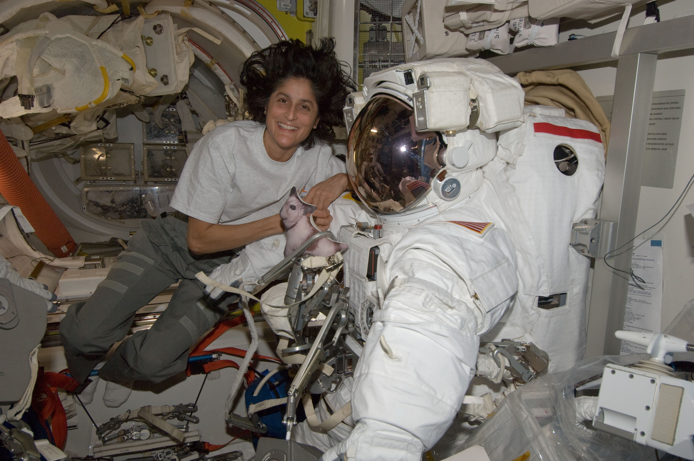

Sunita Williams and her crew have encountered an unexpected challenge aboard the International Space Station (ISS). On June 6, 2024, Williams, along with her colleague Astronaut Barry Eugene "Butch" Wilmore, arrived at the ISS on the new Boeing Starliner spacecraft. They were prepared for a week-long mission to test the new spacecraft, which Williams helped design. However, they now face a significant threat: a superbug named Enterobacter bugandensis.
Enterobacter bugandensis, a multi-drug resistant bacteria, has been discovered on the ISS. This strain is not extraterrestrial but rather a bacteria that hitched a ride to space with the astronauts. Under the stress of the space environment, it has evolved, becoming genetically and functionally distinct from its Earth counterparts. This bacteria primarily infects the respiratory system, posing a serious risk to the crew.
NASA scientists, led by Dr. Kasthuri Venkateswaran from the Jet Propulsion Laboratory (JPL) in Pasadena, California, have isolated thirteen strains of E. bugandensis from the ISS. Their study reveals that these strains have mutated in response to the unique conditions of space, such as microgravity, radiation, and elevated carbon dioxide levels. These mutations have made the strains more potent and resilient.
The research, conducted in collaboration with the Indian Institute of Technology-Madras (IIT-Madras), shows that these strains have thrived on the ISS, co-existing with other microorganisms. In some cases, they may even aid in the survival of other bacteria.
Astronauts aboard the ISS face unique health challenges due to the altered immune conditions and limited medical facilities. Understanding the microbial landscape of the ISS is crucial for assessing the potential impact on astronaut health. The presence of E. bugandensis highlights the need for effective preventative measures and counter-strategies to protect the crew.
Dr. Venkateswaran emphasizes the importance of understanding how benign microorganisms adapt and survive in extreme environments. This knowledge can help design strategies to eradicate opportunistic pathogens and safeguard astronaut health. He states, "Our research uncovers how certain benign microorganisms help to adapt and survive opportunistic human pathogen, E. bugandensis, in the unfavorable conditions of the International Space Station."
Professor Karthik Raman from IIT-Madras adds, "Microbes continue to puzzle us by growing in the most challenging conditions." The research highlights how microorganisms adapt and thrive in closed human-built environments like the ISS, which are subject to extreme conditions.
As Sunita Williams and her crew continue their mission, they will undoubtedly be vigilant against the threat posed by the superbug. Williams, an inspiration to millions, has shown resilience and dedication throughout her career. Her life story is a testament to perseverance, and she remains a role model for many, including the founder of Collegers, who is a devoted admirer of her journey.
The hope is that continued research and collaboration will lead to solutions that protect the health of astronauts and advance our understanding of microbial behavior in space. As humanity ventures further into the cosmos, these findings will be crucial in ensuring the safety and well-being of those who push the boundaries of exploration.
"Truth Uncovered, Reality Restored."